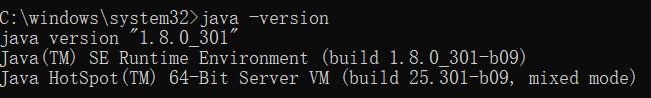
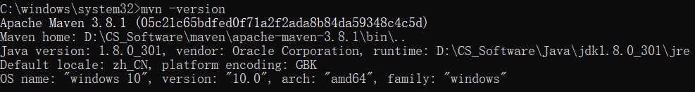
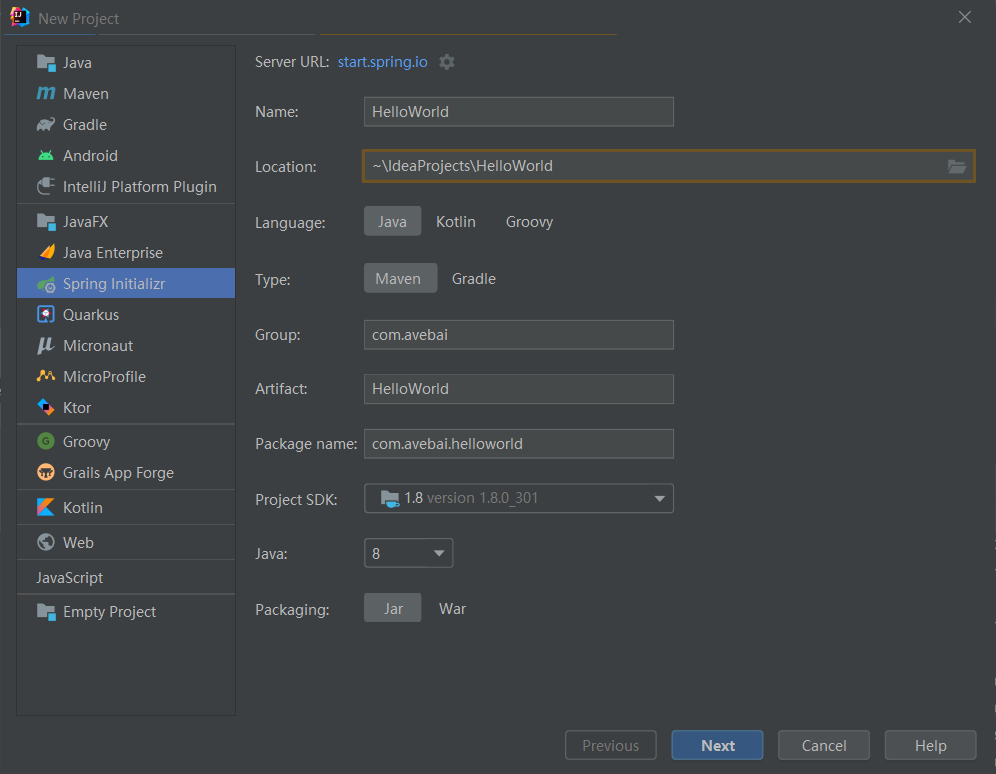
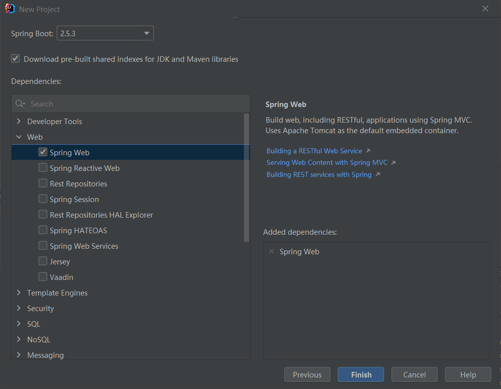
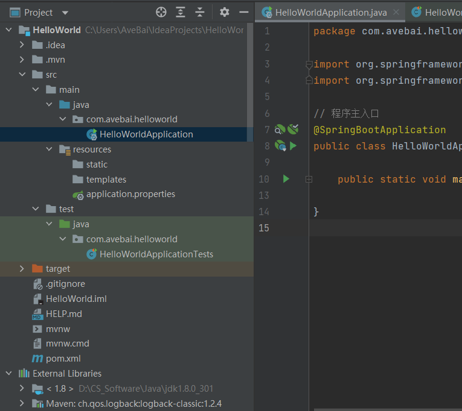
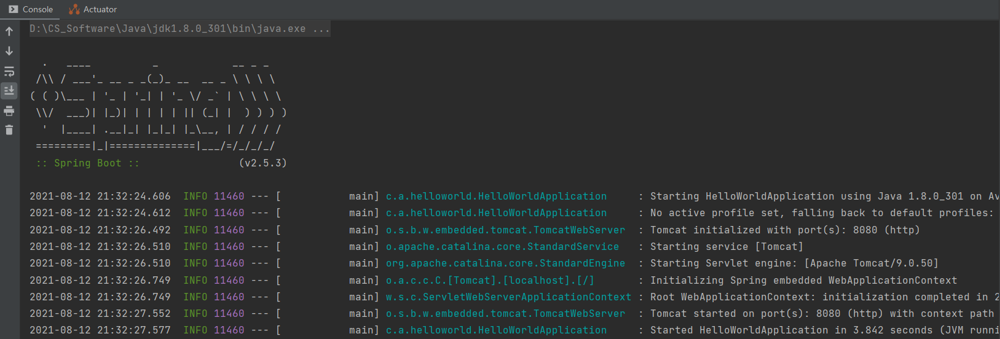
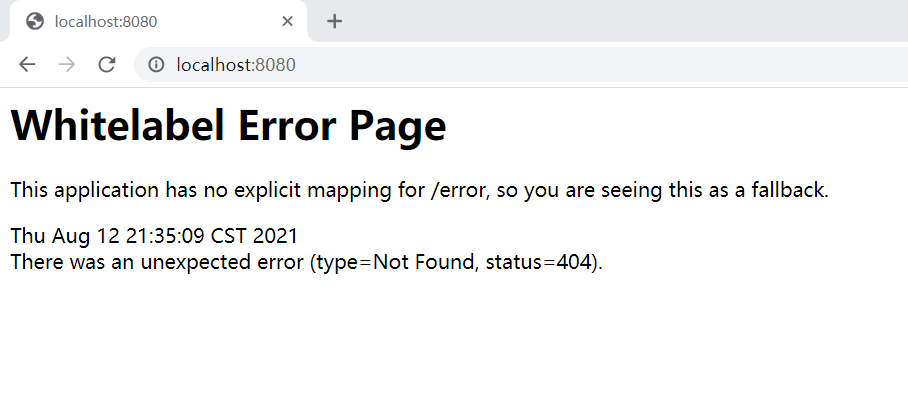
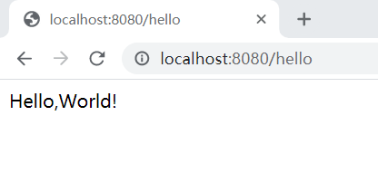

SpringBoot项目的创建
环境配置
JDK 1.8.0_301

Maven 3.8.1

由于每次下载新的依赖文件都需要通过外网访问 Maven 中央仓库，所以需要配置国内镜像。
进入 Maven 安装目录，打开 conf/settings.xml 配置文件，添加阿里云镜像仓库的链接：
1
2
3
4
5
6
7
8
9
10
11
12
13
14
15
16
17
18
19
<settings xmlns="http://maven.apache.org/SETTINGS/1.2.0"
xmlns:xsi="http://www.w3.org/2001/XMLSchema-instance"
xsi:schemaLocation="http://maven.apache.org/SETTINGS/1.2.0 http://maven.apache.org/xsd/settings-1.2.0.xsd">
<!-- 本地仓库 -->
<localRepository>D://CS_Software//maven//LocalWare</localRepository>
<!-- 配置阿里云镜像服务器 -->
</mirrors>
<mirror>
<id>alimaven</id>
<mirrorOf>central</mirrorOf>
<name>aliyun maven</name>
<url>http://maven.aliyun.com/nexus/content/groups/public/</url>
<blocked>true</blocked>
</mirror>
</mirrors>IntelliJ IDEA 2021.2 专业版
IDEA 编辑器自带 Maven 环境，将其设置为自己安装的 Maven 环境。

创建一个SpringBoot项目
Spring 官方提供了 Spring Initializr 进行 Spring Boot 项目的初始化，如下图：

添加依赖和 Starter：选择 Spring Web 依赖

创建完成，等待文件加载完毕

src/main/java 表示 Java 程序开发目录，在该目录下进行业务代码的开发。
该目录下的 HelloWorldApplication 文件是程序主入口：
1 | package com.avebai.helloworld; |
src/main/resources 表示配置文件目录，主要用于存放静态文件、模板文件和配置文件。
static 目录用于存放静态资源文件，如 JavaScript 文件、图片、CSS 文件等。
templates 目录用于存放模板类文件，如 Thymeleaf 文件或 FreeMarker 文件。
src/main/test 表示测试类文件。
pom.xml 用于配置项目依赖。
运行主程序，效果如下图：

可以看到 Tomcat 运行在 $8080$ 端口。
Tomcat：一个免费的开放源代码的 Web 应用服务器，属于轻量级应用服务器。

该页面是 Spring Boot 项目的默认错误页面，404 错误。
编写一个Web接口
在主程序目录新建一个 package，命名为 controller，在 controller 下新建 class，命名为 HelloController。
实现一个接口：
1 | package com.avebai.helloworld.controller; |
这段代码的含义是处理请求为 /hello 的 GET 请求并返回一个字符串。
运行结果：
